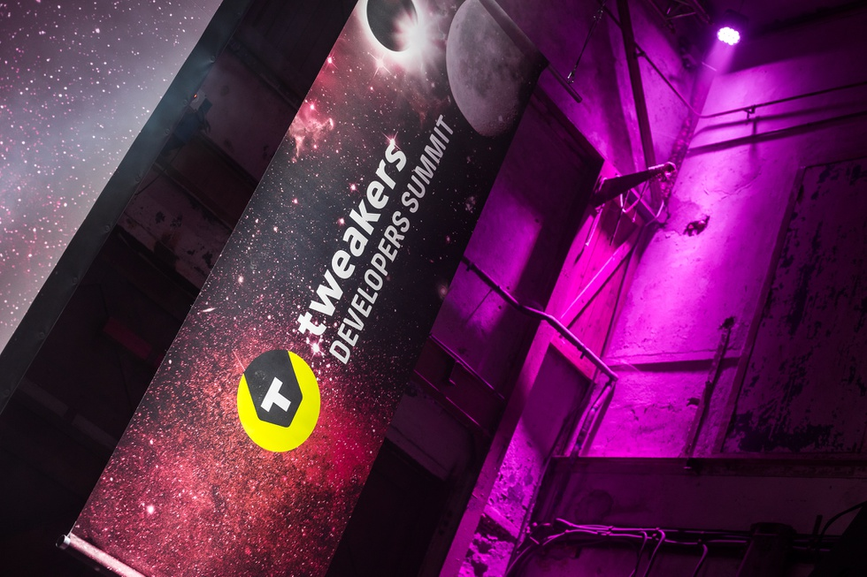
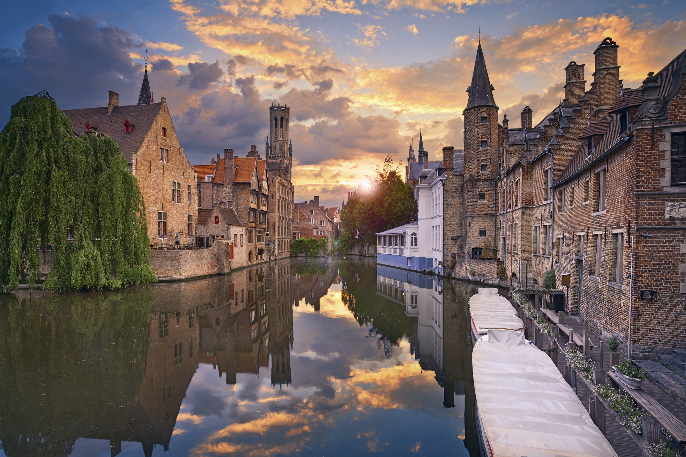
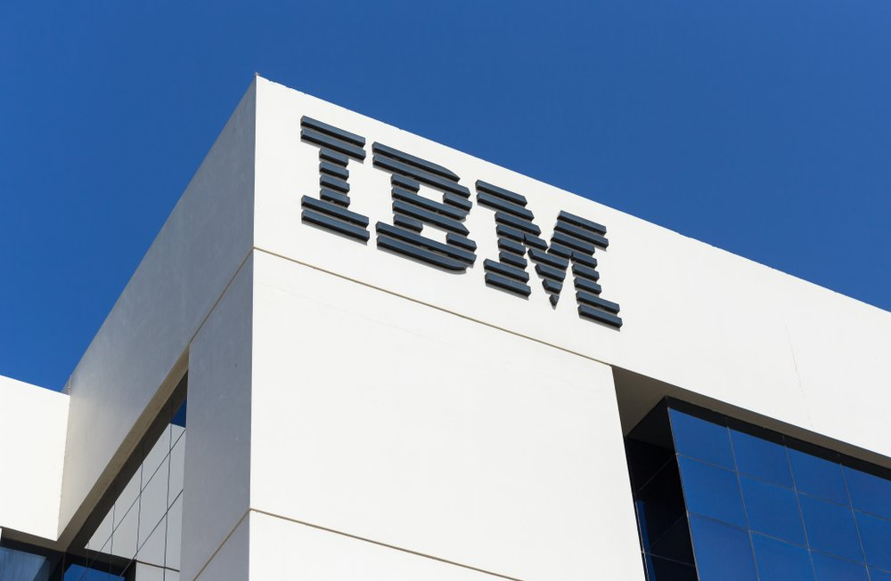

Tweakers Developers Summit is hard op weg een van de meest toonaangevende tech-conferenties van Nederland te worden. Het is de perfecte plek om nieuwe kennis op te doen, inspiratie op te doen en andere ontwikkelaars te ontmoeten. De Dev Summit zelf bestaat uit inspirerende keynotes en verdiepende masterclasses en workshops.
In de BusIT-week in Brugge kregen we meer uitleg over IoT (Internet of Things). We hebben onder anderen een RC-auto gemaakt met een Arduino en een DIY-kit. Mijn doel voor deze activiteit was om nieuwe mensen te leren kennen en mijn eigen grenzen te verleggen.
Een studentenreis die georganiseerd werd door PXL. In deze reis hebben we wat meer geleerd over de geschiedenis van Berlijn. Mijn doel voor deze reis was om zoveel mogelijk de cultuur van Berlijn te bezichtigen.
Dit was een seminarie dat werd gegeven door IBM in Luik. Er werd uitleg gegeven over IoT. Mijn eigen doel voor dit seminarie was om meer te weten te komen over IoT en waarin je het kan verwerken.
